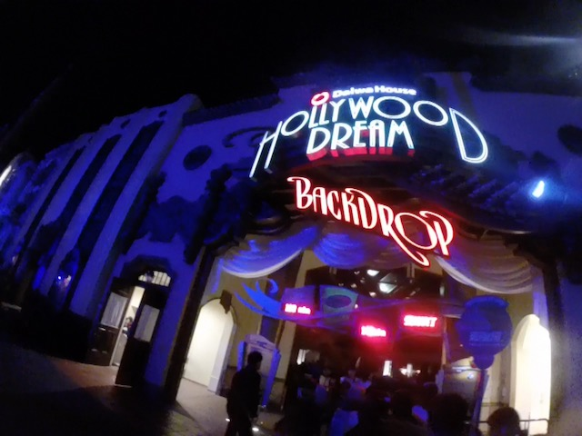

| |
Hollywood Dream Review

We're here at Universal Studios Japan. Today's ride we'll be reviewing for you is Hollywood Dream (or Backdrop if you want to ride it backwards). Now this is something that clearly doesn't meet the height requirements of a hyper coaster. Yeah, this isn't the first hyper coaster to clearly be under 200 ft (61 Meters). But this one also doesn't feel like a hyper coaster. Maybe it's because the airtime is too weak, but it just feels like an Out'N'Back coaster built by B&M. But....it still counts as a hyper coaster. So yeah. We hop in the trains, pull down the clamshell restraints, pick our song (the soundtrack frequently changes, hopefully something good is avaliable), and away we go! We roll around a turn and begin climbing the lifthill. It's not very big, but it's still a really good view of Universal Studios Japan, and just Osaka in general. We then go down the first drop. It's nothing special, but hey. We gain some speed. We then head up a....decent sized airtime hill. It's a standard airtime hill, has a nice little pop of floater air. And....this really is like a miniature version of a standard B&M Hyper. Not crazy, but we're having fun. We go around a sort of banked curve before dipping down and heading right into an overbanked turn. There isn't a ton of whip or laterals here, but it's just cruising around, getting a great view of all the buildings in Osaka. We then go through a tiny little bump. Not a whole lot of airtime here, but it is right underneath the previous dip, so there are some nice headchoppers to be had here. We then head over another bunny hop, and hey. Mild Floater Air. Go over another bunny hop. Mild Floater Air. Another Bunny Hop. Mild Floater Air. Rise up and into a midcourse brake run. Aww. This ride isn't even that fast. Lame. =( Oh well. We head down a small dip, over a little banked hill before dipping down to the ground and start heading through an upward helix. Not an intense helix, but a fun helix nonetheless. There's a little drop out of the helix and...this is the strongest moment of airtime on the ride. Not saying that much, but....it's a decent pop here. We go through another little bunny hop, ass floats out of their seat, and then go into this sort of building. TAKE THE BUILDING!!! Pop out of that, go up a little hill, and glide right into the brake run. As a B&M Hyper, it's the weakest one. Nothing personal, it's just pretty small and the airtime was the weakest. But it's just a super fun ride going around Citywalk. And of course, this is just going forewards. If you ride it backwards as Backdrop, the ride becomes so much better. I don't know why, but the airtime feels so much stronger when backwards. Kind of makes me think if my least favorite B&M Hyper is this good backwards, how would my favorite B&M Hyper be bakwards. Drooling at the thought of that. But yeah. Definetly give this ride a chance if you can.
7/10
8/10 Backwards
Location: Universal Studios Japan
Opened: 2007
Built by: B&M
Last Ridden: October 29, 2018
Hollywood Dream Photos




Home
|